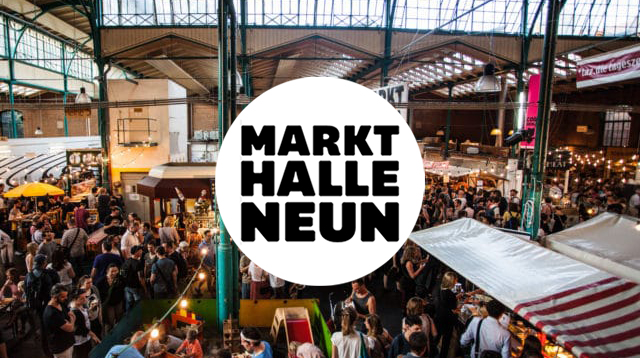
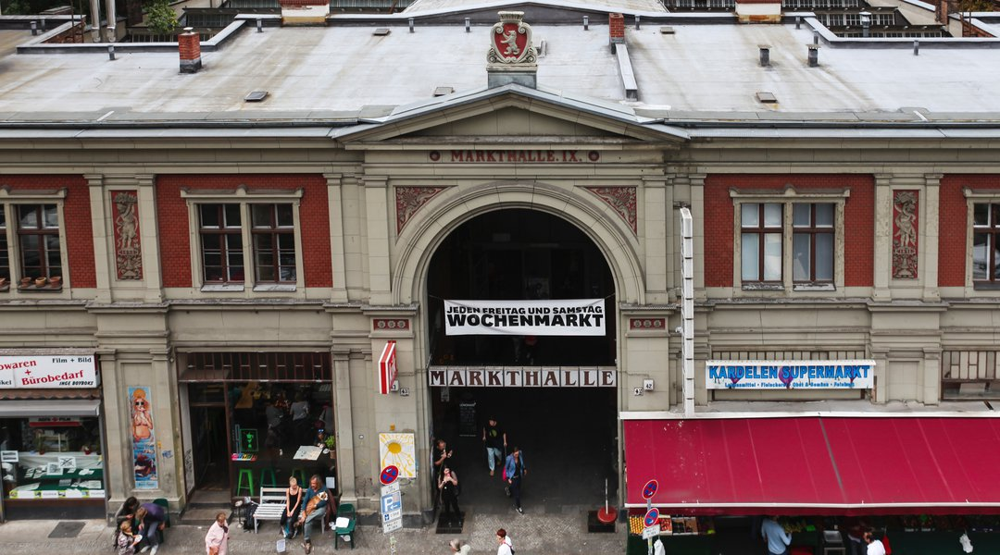
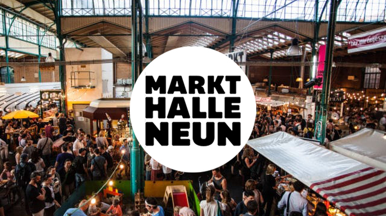
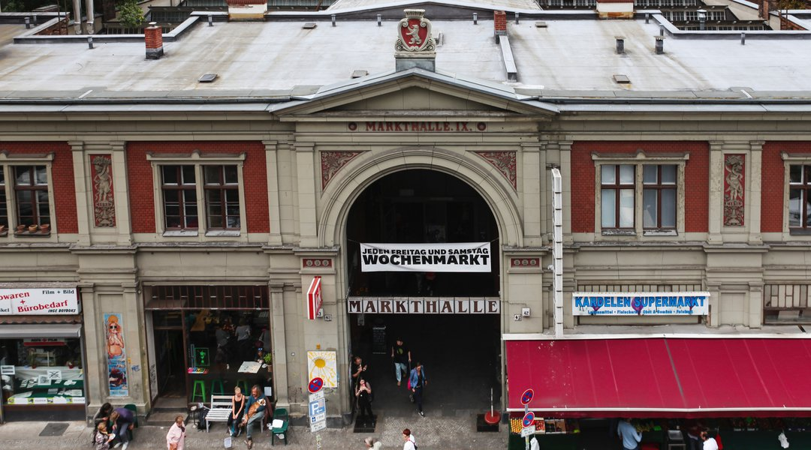

O Markthalle Neun como ponto de alimentação em Kreuzberg estabeleceu o objetivo de mostrar como “comer diferente” e “comprar diferente” pode ser possível na cidade: tratando as pessoas, os animais e o meio ambiente com respeito, com ênfase regional e sazonal, conectado com valor agregado local, transparente e confiável. A oferta básica às terças, quartas e quintas-feiras e o mercado semanal às sextas e sábados com produtos para o dia a dia e especialidades de todo o mundo é a base do Markthalle Neun. Uma padaria e açougue, uma pequena cervejaria interna, uma "loja de tofu" e uma cantina onde você pode olhar por cima dos ombros dos chefs trazem a produção de alimentos do anonimato e de volta ao ambiente urbano.
Segunda a quarta e sexta-feira: 12h às 18h
Quinta-feira: 12h às 22h
Sábado: 10h às 18h
Fechado aos domingos.
Marisa Lopes:
Conheci por meio de um amigo! Um dos melhores italianos da cidade! Grande anfitrião que também é o cozinheiro e especialista em vinhos! Posso recomendar sem reservas!
Nota:
Lucca Peter:
Adoramos ir a Bragato; desfrute do belo ambiente, da excelente cozinha italiana, da vasta gama de vinhos e do serviço comprometido e cordial. A venda fora de casa é um ponto brilhante na era Corona! 👍
Nota:
Susanne Louis:
Não é o restaurante mais barato. É muito bom. A comida é deliciosa e o serviço é muito amigável.
Nota:
€ Faixa de preço: a partir de 10 euros.
Eisenbahnstr. 42/43, Kreuzberg 10997 Berlin, Alemanha